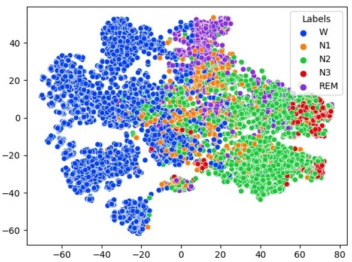

I build EEG methods and deep-learning tools for neurotechnology — currently, measuring how deep brain stimulation leads sit in the brain, without radiation.
I'm a PhD student in the Department of Imaging Neuroscience at the UCL Queen Square Institute of Neurology, supervised by Prof. Vladimir Litvak, and funded by an EPSRC Doctoral Training Partnership studentship.
My PhD develops a wearable-EEG method for measuring the orientation of segmented deep brain stimulation (DBS) leads — something usually done with CT imaging — so it can work in an outpatient clinic. Alongside that I'm helping build spm-python, Python bindings that make SPM usable without a MATLAB licence.
Before UCL I was a research fellow at IIIT Hyderabad with Prof. Bapi S. Raju, building deep-learning models for sleep staging from EEG and eye-movement signals, and working with NIMHANS Bangalore on an Indian sleep dataset. I also spent a summer at CNRS in Lyon simulating laminar source reconstruction for high-precision MEG.
Neurotechnology
Deep brain stimulation
Deep learning
EEG & MEG
Wearable devices
Sleep
Recent
Our polysomnography dataset of ischemic stroke patients is out in Scientific Data.
“Explaining Inaccuracies in Patient EEG Based Sleep Staging” accepted at IEEE ISBI 2026.
Won the Deep Learning Challenge at the London Neurotech Hackathon.
Awarded the UCL EPSRC DTP Research Studentship.
Started my PhD at UCL, supported by the UCL ISAD Tuition Fee Support Award.
Teaching assistant for Neuromatch Academy's Computational Neuroscience course.
Invited talk at Dalian University of Technology.
Our EOG sleep-staging paper appeared at IEEE ICASSP 2024.
Research
Radiation-free DBS lead orientation with wearable EEG
PhD project, UCL, since 2024
Directional DBS leads have contacts split into segments around the lead, so clinicians can steer stimulation toward the target and away from side-effect regions. Steering only works if you know which way the segments face, and today that usually means a CT scan. I'm developing a method that recovers lead orientation from EEG recorded during stimulation through individual segments, and optimising it so it can run in a routine outpatient appointment.
Stimulating each segment in turn produces a slightly different pattern on the scalp. Comparing those patterns tells us which way the lead is rotated.
spm-python: SPM without MATLAB
Open-source software, UCL, since 2024
SPM is one of the most widely used toolboxes for analysing brain imaging and electrophysiology data, but it has needed a MATLAB licence. I contribute to spm-python, the Python bindings for SPM25, so the full toolbox can be called from Python workflows for free.
Python
SPM25
M/EEG
Open science
Deep learning for sleep staging
Research fellow, IIIT Hyderabad, 2022–2024
Sleep clinicians score overnight recordings into five stages by eye, which is slow. I built compact deep-learning models that do it automatically: an EEG model combining LSTMs, residual blocks, attention and squeeze-and-excitation layers, designed for resource-constrained devices, and a transformer-based model that stages sleep from eye-movement (EOG) signals alone, aimed at a sleep-mask wearable. With NIMHANS Bangalore I also built a preprocessing pipeline for an Indian clinical sleep dataset to flag apnea, snoring and limb movements, and we studied why models misclassify patient recordings.

t-SNE of features learned by the EEG model, coloured by sleep stage. Wake, deep sleep (N3) and REM separate cleanly; N1 overlaps its neighbours, as it does for human scorers.
Laminar source reconstruction with high-precision MEG
Research intern, CNRS, Lyon, summer 2023
With Dr. James Bonaiuto I ran simulations exploring the current source density (CSD) transform as part of a project to resolve activity in deep versus superficial cortical layers from MEG, giving depth-electrode-like information non-invasively.